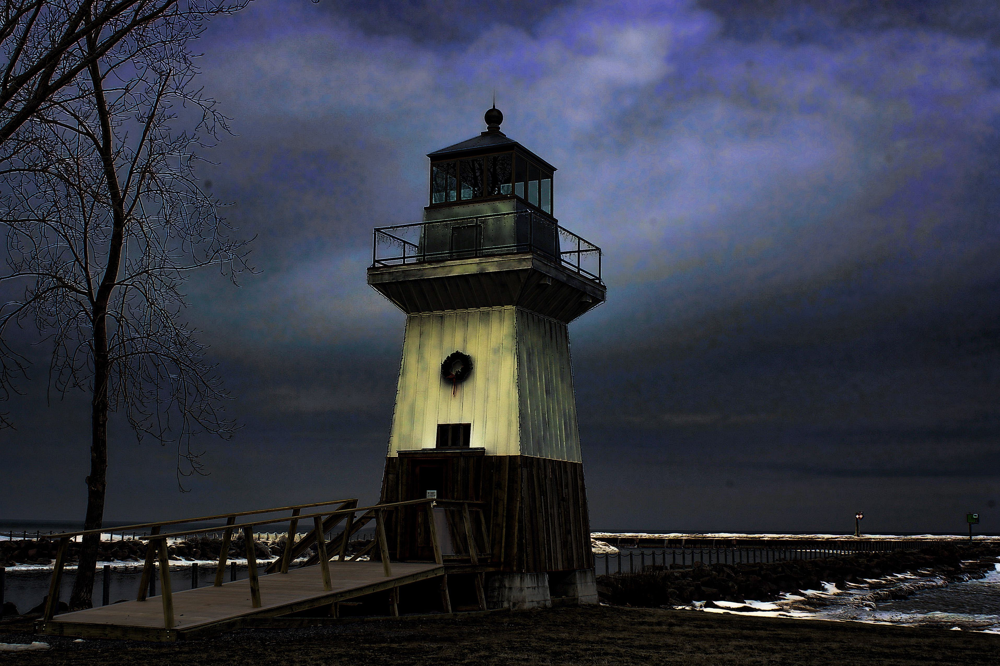

You and your friends want to escape from Calypso, a prison on an island.
Somewhere on this island, you were told that freedom awaits the group that successfully solves the riddles of its four Houses.
Your informant is a mercenary leader who needs you to create a beacon,
so that his men can come to your aid.
Your group eventually stumbles onto a disused lighthouse,
its light dormant and its existence forgotten.
You'll need to revive the lighthouse for you to see the paths ahead,
and to serve as a rally point for yourselves and the leader's men.
You remember your History teacher telling the class about lighthouses.
In the days of old, when GPS and electronic tech are not easily used,
lighthouses use various codes to signal incoming boats.